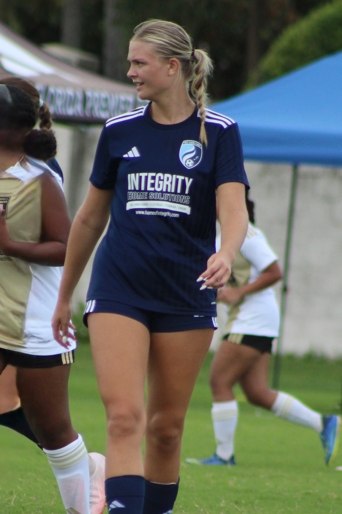

Read the game
Anticipating play, recognizing space and making decisions early.
PLAYER PROFILE · CLASS OF 2028
Composure, awareness and competitive purpose.

HOW SHE PLAYS
Samantha’s game is shaped by awareness, organization and the willingness to compete. She looks to read situations early, stay connected to the players around her and make decisive plays when the moment demands it.
Anticipating play, recognizing space and making decisions early.
Bringing physical presence, discipline and purpose to every phase.
Staying organized, communicating and helping the group play with confidence.


MATCH FILM & HIGHLIGHTS
SAMANTHA HENGEL · YOUTUBEHighlights and match film in one place for coaches and recruiting staffs.
Watch on YouTube ↗NEXT
Match film, schedule and contact information are one click away.